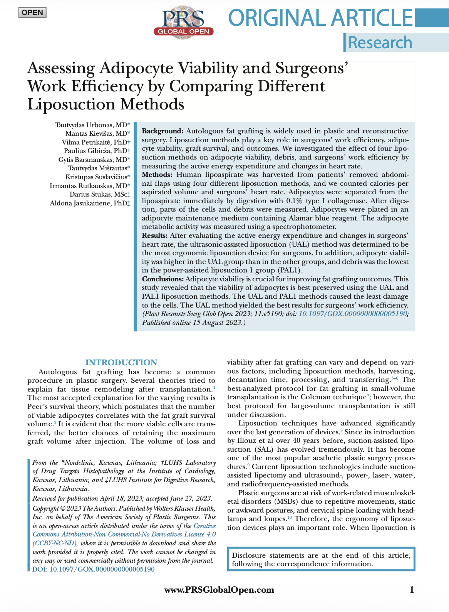

70% of surgeons experience pain. The most common injuries are carpal tunnel syndrome, tennis elbow, rotator cuff issues, and lower back pain.
Is It |a Craft or a Medical Art?
Physical Activity Comparison
Liposuction Surgery
~375 kcal/h
Hiking (Cross-Country)
~375 kcal/h
Doubles Tennis
~325 kcal/h
Brisk Walking (4 mph)
~290 kcal/h
Weightlifting (General)
~220 kcal/h
Other Surgery (e.g., Rhinoplasty)
~110 kcal/h
Calories Required to Aspirate 150 ml Fat
UAL (Ultrasound-Assisted)
~36 kcal
PAL2 (MicroAire)
~37–38 kcal
PAL1 (Euromi)
~42–43 kcal
SAL (Suction-Assisted)
~48 kcal

Our Value
Surgeons' Satisfaction
68%→94%
Our Value
Surgeon Precision
72%→96%
Our Value
Calories Burned
375kcal/h→213kcal/h
Our Market
TAM
Total Addressable Market
30,000
Clinics
$240M
Gross Profit
Liposuction is the most performed surgery globally. With 30,000 surgical facilities worldwide, the total revenue potential for a standard-setting automated tool is $600M.
Our Market
SAM
Serviceable Addressable Market
13,500
Clinics
$108M
Gross Profit
We are prioritizing the USA and EU, which represent 45% of the global market. These regions have the highest labor costs and surgeon burnout rates, making them the ideal early adopters of automation.
Our Market
SOM
Serviceable Obtainable Market
675
Units
$5.4M
Gross Profit
Our initial goal is to capture 5% of the premium clinical market in the US and Europe. This provides a clear path to $13.5M in revenue and $5.4M in profit with a lean sales operation.
Our Competitors
Nord Clinic
Nord Clinic has a large number of partners for distributing our products
“
Surgery is an operation of the mind, not of the arm.
”